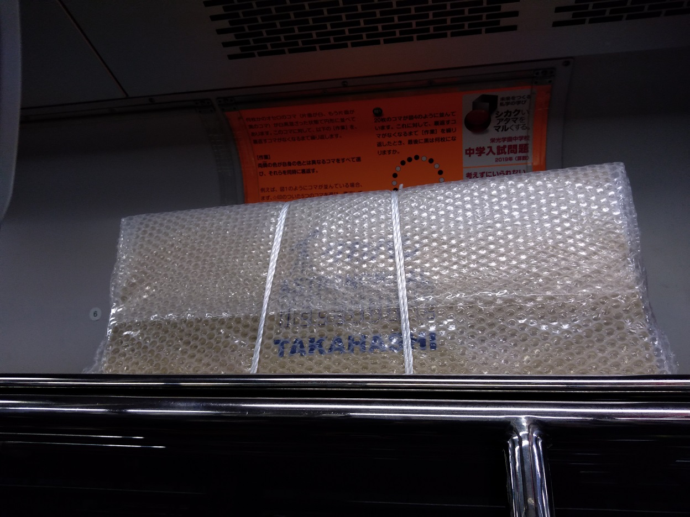
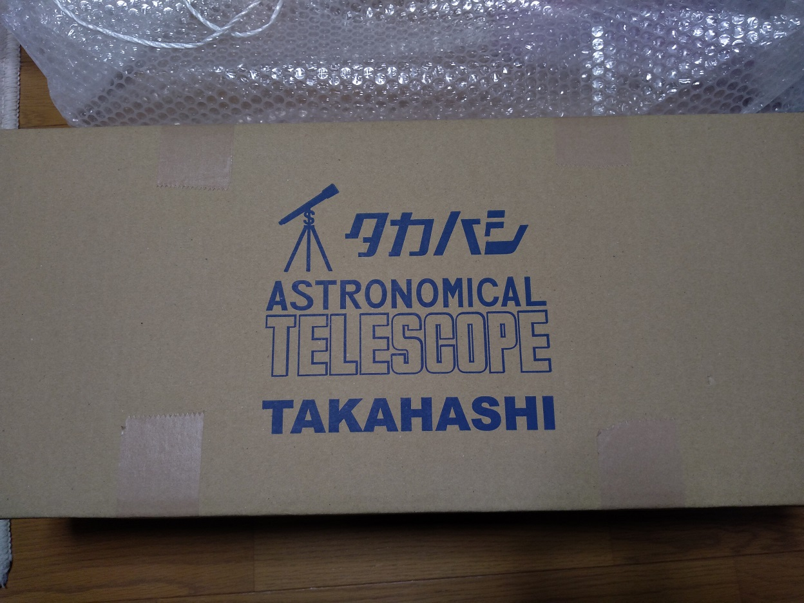
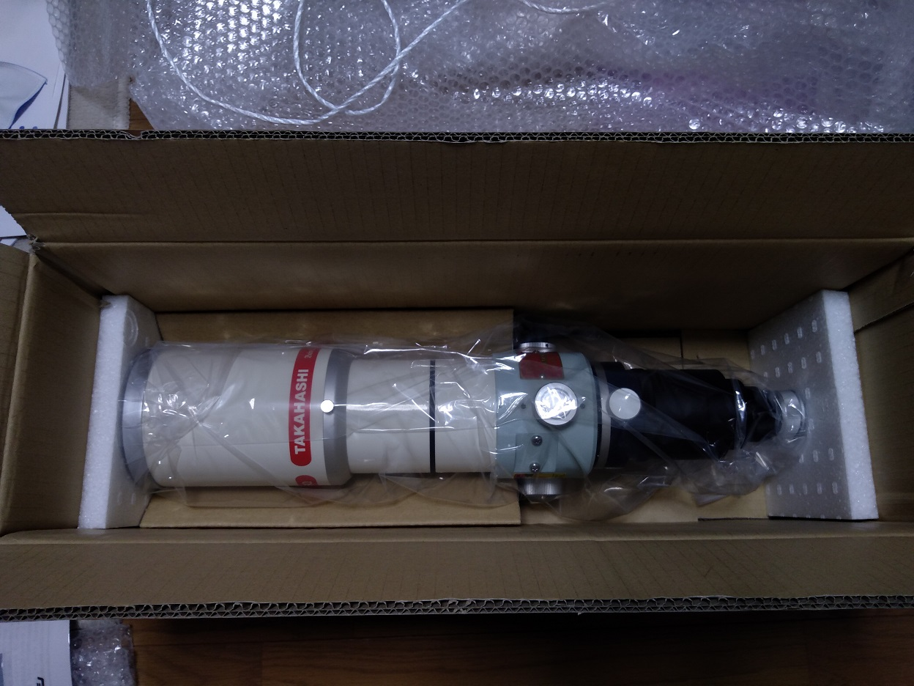
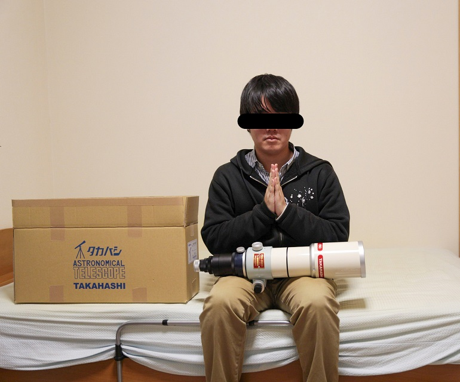

<!DOCTYPE html>
<html>

<head><meta name="generator" content="Hexo 3.8.0">
  <meta charset="utf-8">
  
  <title>タカハシ FSQ-85EDP 購入しました | ほしよみ大学生のブログ</title>
  <meta name="viewport" content="width=device-width">
  <meta name="description" content="あいさつ新年あけましておめでとうございます．今年は喪中なのであまりこの言葉は言わないほうがいいそうなのですが，今年もよろしくおねがいします． 本当はこの記事の前に年末ライブの感想記事を書いているところなのですが，短めのこちらを先に公開してしまおうと思います．">
<meta name="keywords" content="天体写真,機材,鏡筒">
<meta property="og:type" content="article">
<meta property="og:title" content="タカハシ FSQ-85EDP 購入しました">
<meta property="og:url" content="http://dabokun.github.io/2020/01/07/00000029-fsp85edp-purchased/index.html">
<meta property="og:site_name" content="ほしよみ大学生のブログ">
<meta property="og:description" content="あいさつ新年あけましておめでとうございます．今年は喪中なのであまりこの言葉は言わないほうがいいそうなのですが，今年もよろしくおねがいします． 本当はこの記事の前に年末ライブの感想記事を書いているところなのですが，短めのこちらを先に公開してしまおうと思います．">
<meta property="og:locale" content="ja">
<meta property="og:image" content="http://dabokun.github.io/2020/01/07/00000029-fsp85edp-purchased/card.jpg">
<meta property="og:updated_time" content="2020-01-06T21:30:08.000Z">
<meta name="twitter:card" content="summary_large_image">
<meta name="twitter:title" content="タカハシ FSQ-85EDP 購入しました">
<meta name="twitter:description" content="あいさつ新年あけましておめでとうございます．今年は喪中なのであまりこの言葉は言わないほうがいいそうなのですが，今年もよろしくおねがいします． 本当はこの記事の前に年末ライブの感想記事を書いているところなのですが，短めのこちらを先に公開してしまおうと思います．">
<meta name="twitter:image" content="http://dabokun.github.io/2020/01/07/00000029-fsp85edp-purchased/card.jpg">
<meta name="twitter:creator" content="@dabo_pic">
  
  <link rel="alternative" href="/atom.xml" title="ほしよみ大学生のブログ" type="application/atom+xml">
  
  
  <link rel="icon" href="/images/favicon.png">
  
  <link rel="stylesheet" href="/css/style.css">
  <!--[if lt IE 9]><script src="//html5shiv.googlecode.com/svn/trunk/html5.js"></script><![endif]-->
  
</head></html>
<body>
  <div id="container">
    <div class="mobile-nav-panel">
	<i class="icon-reorder icon-large"></i>
</div>
<header id="header">
	<h1 class="blog-title">
		<a href="/">ほしよみ大学生のブログ</a>
	</h1>
	<nav class="nav">
		<ul>
			<li><a href="/">Home</a></li><li><a href="/categories">Categories</a></li><li><a href="/tags">Tags</a></li><li><a href="/archives">Archives</a></li><li><a href="/about">About</a></li><li><a href="/work">Work</a></li>
			<li><a id="nav-search-btn" class="nav-icon" title="Search"></a></li>
			<li><a href="https://github.com/dabokun"></a>
			</li>
			<li><a href="https://twitter.com/dabo_pic"></a></li>
			<li><a href="/atom.xml" id="nav-rss-link" class="nav-icon" title="RSS Feed"></a>
			</li>
		</ul>
	</nav>
	<div id="search-form-wrap">
		<form action="//google.com/search" method="get" accept-charset="UTF-8" class="search-form"><input type="search" name="q" class="search-form-input" placeholder="Search"><button type="submit" class="search-form-submit">&#xF002;</button><input type="hidden" name="sitesearch" value="http://dabokun.github.io"></form>
	</div>
</header>
    <div id="main">
      <article id="post-00000029-fsp85edp-purchased" class="post">
	<footer class="entry-meta-header">
		<span class="meta-elements date">
			<a href="/2020/01/07/00000029-fsp85edp-purchased/" class="article-date">
  <time datetime="2020-01-07T12:38:31.000Z" itemprop="datePublished">2020-01-07</time>
</a>
		</span>
		<span class="meta-elements author">astr0dab0</span>
		<div class="commentscount">
			
			<a href="http://dabokun.github.io/2020/01/07/00000029-fsp85edp-purchased/#disqus_thread" class="article-comment-link">Comments</a>
			
		</div>
	</footer>
	
	<header class="entry-header">
		
  
    <h1 class="article-title entry-title" itemprop="name">
      タカハシ FSQ-85EDP 購入しました
    </h1>
  

	</header>
	<div class="entry-content">
		
		
		<div id="toc" class="toc-article">
			<p class="toc-title">目次</p>
			<ol class="toc"><li class="toc-item toc-level-3"><a class="toc-link" href="#あいさつ"><span class="toc-number">1.</span> <span class="toc-text">あいさつ</span></a></li><li class="toc-item toc-level-3"><a class="toc-link" href="#やってしまった…"><span class="toc-number">2.</span> <span class="toc-text">やってしまった…</span></a></li></ol>
		</div>
		
		<h3 id="あいさつ"><a href="#あいさつ" class="headerlink" title="あいさつ"></a>あいさつ</h3><p>新年あけましておめでとうございます．今年は喪中なのであまりこの言葉は言わないほうがいいそうなのですが，今年もよろしくおねがいします．</p>
<p>本当はこの記事の前に年末ライブの感想記事を書いているところなのですが，短めのこちらを先に公開してしまおうと思います．</p>
<a id="more"></a>
<h3 id="やってしまった…"><a href="#やってしまった…" class="headerlink" title="やってしまった…"></a>やってしまった…</h3><p>タイトルの通りなのですが，先日ついに初タカハシ鏡筒， FSQ-85EDP というガチ屈折望遠鏡を購入しました．本当はもうちょっと後に買う予定だったのですが，1月と2月は忙しくなることが予想されるのと，ずっと欲しかったものでいてもたってもいられなかったこともあり，金欠覚悟でさっさと買ってしまおうと思い立ったわけです．ちょうど5日には大学院の友人らと神保町のカフェに行く予定もあったので，近場の秋葉原まで歩いていって買うことにしました．</p>
<p>その日の一連のツイートはこちらです笑<br><div class="twitter-wrapper"><blockquote class="twitter-tweet"><a href="https://twitter.com/dabo_pic/status/1213625623953850368" target="_blank" rel="noopener"></a></blockquote></div><script async defer src="//platform.twitter.com/widgets.js" charset="utf-8"></script></p>
<p>元ネタは坂本真綾の「ソラヲミロ」という楽曲です．あまり呟きすぎると JASRAC 案件になりそうなのでこの辺にしておきます()．</p>
<p><br>電車で運搬中の望遠鏡．置き去りフラグではないですよ？！</p>
<p><br>というわけで無事に持ち帰りました．</p>
<p><br><span style="font-size: 500%">やってしまった…</span><br><br><br></p>
<p><br>部屋で急遽記念撮影．汚部屋なのでここ以外は写せませんが笑</p>
<p>月末は誕生日なので，自分への誕プレのつもりです．今まで135mm以下で極軸もテキトーにぬくぬくやっていたわけですが，ここにきて「長焦点撮影のスタートラインに立った．もう逃げられない．」という気持ちですね．書いたとおりまだ嬉しさよりもやってしまった感のほうが強いという笑．一応人に頂いた R200SS を持ってはいますが，まだ撮影運用できていなかったので，これを機に撮影鏡筒に仕上げていくというところもやっていきたいですね．どうせガイドシステムを組んでいったりしなければいけないですから．<br>本体以外は本当に何も買っていないので，今のところはただの置物です．早いとこカメラマウントと鏡筒バンドを買って，最低限試せるようにはしたいと思っていますが，本格的にシステムを組んでガチ撮影にもっていくのは今年中の目標ということで，のんびり一生モノにしていきたいと考えています．</p>
<p>また細々と買ったものがあればここでも報告します．それでは！</p>

		
	</div>
	<footer class="article-footer">
		<a href="https://twitter.com/intent/tweet?text=%E3%82%BF%E3%82%AB%E3%83%8F%E3%82%B7%20FSQ-85EDP%20%E8%B3%BC%E5%85%A5%E3%81%97%E3%81%BE%E3%81%97%E3%81%9F｜%E3%81%BB%E3%81%97%E3%82%88%E3%81%BF%E5%A4%A7%E5%AD%A6%E7%94%9F%E3%81%AE%E3%83%96%E3%83%AD%E3%82%B0&url=http://dabokun.github.io/2020/01/07/00000029-fsp85edp-purchased/" class="twitter-share-button" target="_blank" title="Twitter"></a>
		<script async src="https://platform.twitter.com/widgets.js" charset="utf-8"></script>

		<div id="fb-root"></div>
		<script async defer crossorigin="anonymous" src="https://connect.facebook.net/ja_JP/sdk.js#xfbml=1&version=v4.0"></script>
		<div class="fb-share-button" data-href="http://dabokun.github.io/2020/01/07/00000029-fsp85edp-purchased/" data-layout="button_count" data-size="small"><a target="_blank" href="https://www.facebook.com/sharer/sharer.php?u=https%3A%2F%2Fdabokun.github.io%2F&amp;src=sdkpreparse" class="fb-xfbml-parse-ignore">シェア</a></div>
	</footer>
	<footer class="entry-footer">
		<div class="entry-meta-footer">
			<span class="category">
				
  <div class="article-category">
    <a class="article-category-link" href="/categories/equipments/">機材</a>
  </div>

			</span>
			<span class=" tags">
				
  <ul class="article-tag-list"><li class="article-tag-list-item"><a class="article-tag-list-link" href="/tags/astrophotography/">天体写真</a></li><li class="article-tag-list-item"><a class="article-tag-list-link" href="/tags/equipments/">機材</a></li><li class="article-tag-list-item"><a class="article-tag-list-link" href="/tags/telescope/">鏡筒</a></li></ul>

			</span>
		</div>
	</footer>
	
	
<nav id="article-nav">
  
    <a href="/2020/02/24/00000030-fsq-first-light/" id="article-nav-newer" class="article-nav-link-wrap">
      <strong class="article-nav-caption">Newer</strong>
      <div class="article-nav-title">
        
          FSQ85-EDP ファーストライト！
        
      </div>
    </a>
  
  
    <a href="/2020/01/01/00000028-music-for-today-only-live/" id="article-nav-older" class="article-nav-link-wrap">
      <strong class="article-nav-caption">Older</strong>
      <div class="article-nav-title">
        
          【坂本真綾】今日だけの音楽ライブツアーに参加してきました
        
      </div>
    </a>
  
</nav>

	
</article>


<section id="comments">
	<div id="disqus_thread">
		<noscript>Please enable JavaScript to view the <a href="//disqus.com/?ref_noscript">comments powered by
				Disqus.</a></noscript>
	</div>
</section>

    </div>
    <div class="mb-search">
  <form action="//google.com/search" method="get" accept-charset="utf-8">
    <input type="search" name="q" results="0" placeholder="Search">
    <input type="hidden" name="q" value="site:dabokun.github.io">
  </form>
</div>
<footer id="footer">
	<h1 class="footer-blog-title">
		<a href="/">ほしよみ大学生のブログ</a>
	</h1>
	<span class="copyright">
		&copy; 2021 astr0dab0<br>
		Modify from <a href="http://sanographix.github.io/tumblr/apollo/" target="_blank">Apollo</a> theme, designed by <a href="http://www.sanographix.net/" target="_blank">SANOGRAPHIX.NET</a><br>
		Powered by <a href="http://hexo.io/" target="_blank">Hexo</a>
	</span>
</footer>
    
<script>
  var disqus_shortname = 'astr0dab0';
  
  var disqus_url = 'http://dabokun.github.io/2020/01/07/00000029-fsp85edp-purchased/';
  
  (function(){
    var dsq = document.createElement('script');
    dsq.type = 'text/javascript';
    dsq.async = true;
    dsq.src = '//go.disqus.com/embed.js';
    (document.getElementsByTagName('head')[0] || document.getElementsByTagName('body')[0]).appendChild(dsq);
  })();
</script>


<script src="//ajax.googleapis.com/ajax/libs/jquery/2.0.3/jquery.min.js"></script>


<link rel="stylesheet" href="/fancybox/jquery.fancybox.css" media="screen" type="text/css">
<script src="/fancybox/jquery.fancybox.pack.js"></script>


<script src="/js/script.js"></script>
  </div>
</body>
</html>